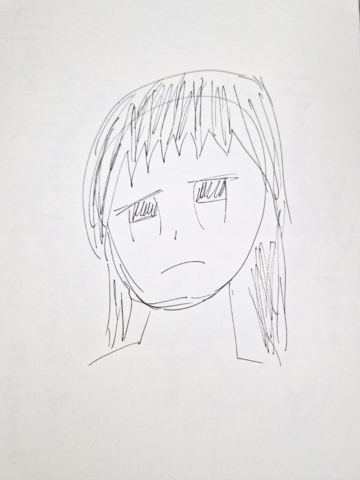

I see, I can improve my drawings!
A story of a single illustration by Nina Kalinina, July 23rd, 2025
I've wanted to draw for over a decade, but couldn't. This year, after 40 hours of practising, I went from child-like scribbles to being able to complete a self-portrait with considerable likeness. I wrote notes about my experience in March. Since then, I have been trying to learn how to draw stylised art that I could use in my games. I think I have reached the point where my drawings, while amateurish and full of obvious mistakes, do not look unpleasant for an average indie game player.
Art teachers, even the most well-meaning, often fail to convey the idea that drawing is a skill that thrives in feedback loops. Draw, evaluate, redraw, repeat. If you are lucky, you will pick up this idea from seeing masters iterating over their drawings. If not, you will just see a maestro sketching two ovals and then turning them into a perfect owl drawing, and then nodding with "trust me, you too can improve your drawing skills". I think the cycle of iterations in drawing is really a powerful tool, and I feel that more people would have fun drawing if they knew about it.
If you are a beginner and found this note helpful, please let me know. If you are an experienced artist and have feedback on this note, I will be very happy to hear from you, too. Please direct your comments to this Mastodon thread.
Every illustration starts with an idea
Since my initiation to drawing, I've been drawing for a few hours every week. I could tell I'm progressing, but I wasn't sure if my progress was fast enough. Worse still, whenever I tried to make an original drawing, it ended up not being even close to what I envisioned. "Ah, maybe I need to practice drawing heads? Or learn more about anatomy? Or perspective? Where do I go from here..."
In a moment of such confusion, I heard a famous illustrator saying on YouTube that the fastest way for a beginner to improve at drawing is to complete illustrations. Sounds legit! I will definitely not regret completing an illustration.
But what should I draw? I had lots of ideas for little stories, but I couldn't figure out how to express these stories in a single image. For the sake of simplicity, I decided to draw an illustration featuring The Girl from a little game called "Date, date, date" I made for FlickJam.

The original character is using a versatile and affordable "Halfbody Female Character Sprite for VN" by Sutemo. I wanted to draw The Girl preparing for the date, perhaps taking a selfie to evaluate an outfit. It would have been nice to show lots of dresses and tops scattered around the room, but I felt like it was too difficult, so I decided to just make "The Girl is taking a selfie". The target image resolution is 240x320 in 32 colours, a scrollable illustration for GameBoy Advance. Surely scaling down the target resolution will make many imprecisions in the illustration irrelevant.
Uh, was it supposed to be this ugly?
The "right" process of making an illustration starts with preparing thumbnails and picking the best one.
No matter how many thumbnails I was drawing, I couldn't really capture what I wanted.
Protip: pen is not great for drawing thumbnails. It is too contrasting and too "precise".

I couldn't figure out how selfie taking is supposed to look like, so I took multiple photos of my girlfriend taking a selfie, and used them as a reference. I also took my favourite blue pencil for sketching, and increased the thumbnail size to be as large as a matchbox. I don't think I did a great job capturing the movement, but after five thumbnails I found the one I liked at least a bit.
My soul ached because the sketch looks nothing like my reference photos. My initial idea was to use a dramatic camera angle, resulting in most body parts being extremely foreshortened in perspective. The arm on the drawing, pixel-wise, was supposed to be three times longer than the leg. My brain refused to draw that, no matter how hard I tried to convince it that this is how this angle should look. I ended up changing my reference pose.
As an exercise, I looked up how thumbnails made by pros look like, and regretted this immediately.
Protip: collect your references, both photos and illustrations, but try not to compare your work in progress with them.
As you noticed, this thumbnail has some sort of a background. I chose one randomly. Don't be like me, don't choose a background randomly. When it comes to illustrations, it is possible to improve anything as long as the idea behind the illustration holds. But with this background, there really isn't much of an idea, is there?

I redraw the thumbnail to an A6 rough sketch. Then redraw again by tracing the first sketch using a makeshift tracing light box (a picture frame on top of a desk lamp). I like the redraw better overall, but the face on the sketch looks better, so I'm going to use both.
On improvement feedback loops
I can hear some of you getting angry: "Wait a second, you just pulled a now draw the rest of the owl on me!"
I begrudgingly agree. While not the prettiest, the sketch looks much better than the thumbnail. How did I do it? Unfortunately, I did not capture intermediate steps between the thumbnail and the (still ugly) sketch, so I cannot show you how feedback loop worked that time, but I prepared something better: a demonstration of a feedback loop starting from a hopeless sketch.

This is a sketch I drew this spring. I think it is incredibly ugly. Back then, I was sure that the best thing that could be done about it was to throw it away and start over. Unfortunately, starting over would simply mean drawing yet another sketch that would look as ugly.
Protip: try to find a balance between starting over and iterating on the same drawing. "Am I learning something new?" is a good question to use as guidance here.


I traced the original drawing in Krita, and then added a circle and a guideline on a separate layer to see how bad the sketch is. It is very bad. Human skulls are generally round in their upper part, so I used a free transform tool to adjust the sketch.
I also know that human eyes are generally positioned symmetrically on a human face. I use free select to cut the eyes and the mouth out of the sketch and reposition them. That's better, but this sketch is at its limits of usefulness.

I tone the layer with the sketch, reduce the opacity, and draw a new sketch on top. Note that I'm using a brush that leaves semi-transparent, wide, soft lines. I have to make multiple strokes, snip-snip-snip, to draw a segment of a line. It is easier to trace this way, and allows for softening sharp curves and adjusting the position of lines.
Among the adjustments, I'm trying to do something about the hair, add an ear (tentatively), and make the neck thinner.


I remove the layer and look at the new sketch. Yeah, the hair is probably the ugliest part of it. Can I do something about it?

The same trick as before: I make the previous sketch translucent, and draw a new sketch on top. I decided to add eye irises, and somehow that made the sketch look uglier than before. But I think the hair starts to look a bit better than before.


If eyes look wrong, but their position on the face is seemingly correct, it is most likely because the irises are not aligned. I used a free transform tool to move the iris of the right eye around until it started to look less uncanny. At this point, I felt a bit stumped. How can I improve the drawing further? It's obviously not ready for the lineart stage, but a simple redraw would result in the same (if not worse) drawing.


Protip: if your sketch looks flat, and you cannot imagine it in 3D, just fill it with one or two or three shades of grey. It is a simple yet effective way to get new ideas.

Tracing greyscale sketches is fun. I decided to adjust the position of many lines in the process.
I zoomed the image out and looked at it while squinting. Some of the lines and shapes looked wrong, so I adjusted them.
Protip: do not zoom in too much. Ideally, keep the whole image visible on the screen at once. Also, keep a thumbnail preview showing the image really zoomed out. It will help you to notice odd things you wouldn't notice while zoomed in. At this point, I felt a bit stumped again, and so I painted the sketch with greys once more. It is still ugly. But did you notice?

I started with a hopeless sketch, and in the next 50 minutes, iterated on it so it now looks amateurish but a bit cute, and there was no magic or "now draw the rest of the owl" involved. Draw, evaluate, redraw, repeat.
Protip: do not be afraid of moving parts of the image around with free transform. Resize things. Erase parts of the image and draw them over if needed. If you can't understand how to draw a thing, find a reference, place it side by side with your drawing and see what the biggest thing you're missing, and then redraw your sketch.
I hope now you believe that (at least sometimes) drawing is not about having talent, but about being able to draw and redraw and redraw some more? It isn't always fun, especially when, despite many redraws, you still cannot draw the things you wanted to draw. If you can find satisfaction in seeing progress when you compare your old and your new drawings, you'll be fine.
Point of view
Ah, yes, this was supposed to be a story about The Girl's illustration.

I quickly traced the photo of my sketch, and filled it with some temporary colours to get a better idea about the composition. The composition sucks.
Protip: take regular breaks and compare your current step with your previous step. On my retrace/redraw step, I changed the lower part of the pose, making it far less dynamic and interesting, but I did not even notice until I started writing this note.


Digital illustration is fun. Free transform tool for the win! I spliced the character into "head", "torso" and "legs", and rotated them around. I also cut off the selfie-taking arm and moved it so the image would look more dramatic. With no knowledge of anatomy, my best bet is to adjust things to my personal taste.

I made another trace on top of the sketch, and realised that many things about the sketch require a correction. The background I've chosen sucks, the head I'm using in the sketch just doesn't look good, and both hands don't look like human hands. So I got out my references and redraw those particular parts of the drawing. I had to redraw the head, like, five times before it started to look okay.
Protip: as I mentioned, keep a collection of photos, videos, illustrations and 3D renders as references for your illustration. Most beginners, me included, wouldn't be able to draw convincing hands without drawing them right from the photo.
Side note: what's wrong with the background?
In one of the "Illustration correction" videos Saito Naoki shares a beautiful illustration of a girl that comes with a description along the lines "this girl put on make-up and contact lenses for the first time ever". Except there is nothing in the illustration that hints at the girl's past. There is no story; it is just a beautiful girl. That's how you get a boring illustration.
My illustration of The Girl suffers from the same problem: how can the viewer understand that The Girl is getting ready for her first date as a girl? I tried to retro-fit the illustration by adding a boy's school uniform and a trans flag to the background. It isn't great, but it is better than nothing.
Finishing up the rough sketch

I cleaned up my rough sketch, and filled it out with grey to see if there are any obvious mistakes. There were many. I have fixed some, but decided to leave detailed fixes until the line art stage.

After that, I tentatively added some colours and shadows. Most of them don't make sense, but it helps to get a better feeling about the illustration. After colouring, my dissatisfaction with the hair design grew to the point where I felt like I absolutely had to fix it immediately. I added shadows and highlights to eyes, and they really started to look 3D, very cool!
Real work begins
The illustration is far from done. This rough coloured sketch roughly marks 33% of the work.

I copied the rough sketch to a new file and started tracing it far more carefully than ever before. I add line strokes one on top of the other, especially on the lines that I want to emphasise. As usual, I tweaked some lines during the trace, especially around the face. When I turned off the layer with the rough sketch, I was surprised. "Eh?! This is pretty! Did I draw it?"
Of course, if you zoom in, you will see that lines are full of imperfection. And if you zoom out, you will see that the anatomy is wrong. Oh well.
Protip: if in trouble, use soft semi-transparent brush with little dynamics for sketching and hard non-transparent brush with moderate amount of dynamics for line art.

After comparing my lineart with the background, I started to think that the background is painfully inadequate, so I sketched something new based on a photo of my old bedroom.
Adding flat colours to the image was a surprisingly quick process. The line art had no holes in it, so I just bucket-filled the drawing. I placed each colour on its layer; this way I can easily adjust the colour AND use it as a clipping layer for shadows.


The next step was adding shadows. I first added a simple shadow of a single colour through a "multiply" layer, and then used colour layers as clipping masks to tint the shadow. Unfortunately, I forgot to turn off the original shadow layer, so the shadows were much darker than I wanted them to be until I noticed my mistake the next day.
I used many illustrations as references for drawing shadows. If you compare the shadows on my colour sketch and on the final illustration, you will notice that I have changed most of them. The result is far from perfect, but I think it is good enough for now.

The next step was adding highlights and trying to export the image into a resolution suitable for a vintage console. The scale-down made obvious that the eyes are still wrong: wrong angle, wrong amount of dark colours. The disappearing "Mona Lisa"-esque smile is kind of cool, though.
I started working on the background after I fixed the eyes. Unfortunately, the background wasn't well-planned, and it looked sketchy. As charming as it might be, it drags down the quality of the final work. "Can I do something about it? I am fed up with this illustration. I want to finish it ASAP and move on to the next project. I am at the limits of my abilities for now; it'd be better to just redraw this illustration sometime in the future."

Well, let's make it quick, then. Sometimes anime shows use processed photos as the backgrounds. Perhaps, I can do something similar? I opened GNU IMP and smashed multiple photos together (the ones I used as references). Then I fixed obvious blunders with a patch brush, and applied a watercolour effect. This background looks better than the previous attempt, but it is too different in style to the illustration and looks just like a photo. Sigh.

Well, in this case, I can take the same brush I used for the line art, and draw the lines over the processed photo! I chose a colour that is slightly more washed-out than the character's line art to make the character stand out, though. I think the illustration is more or less done now!
Final results
I have converted the illustration to multiple resolutions: single-screen GBA illustration, single-screen SNES cropped illustration, two-screen GBA illustration. If I were to use them in a real project, I'd probably export background, line art and colours separately, and combine them to a pixel art-like image in Aseprite, but that'd require moving pixels around with great care. And I was out of energy to care at this point. "It is done when I say it's done".

Thoughts after finishing the illustration
I don't feel like the illustration is professional: it has issues with perspective, anatomy, composition, colours and light. At the same time, I have seen commercial games with less detailed and interesting art, so, in a certain way, I think it is "good enough".
The illustration took over 22 hours of work. If you'd focus on a goal for over 20 hours, you are definitely going to improve. However, it is a game with diminishing returns: I can't help but compare my progress over 20 hours here with my progress over the first 40 hours of me drawing. It was a powerful exercise, though. If you'd shown me this illustration half a year ago and told me I drew it, I wouldn't believe you. In these 22 hours, I have learned a lot.
I think I will revise this illustration one day, when I learn more about drawing. But for now, it is "done".
To be continued...